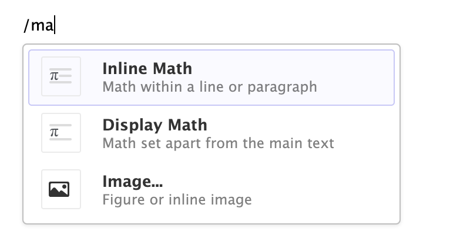

x <- 1:10
y <- x^2
plot(x, y)QUARTO_information
1. Quarto
1.1 Рендеринг
это процесс преобразования исходных данных или информации в вид, который может быть отображен и воспринят. В контексте создания документов, веб-страниц, графики, анимации и других медиафайлов, рендеринг означает создание конечного визуального представления на основе исходных данных или описания.
Вот несколько примеров рендеринга в разных контекстах:
Рендеринг веб-страниц: Когда вы посещаете веб-сайт, ваш браузер рендерит HTML-код, который определяет структуру и содержание страницы, визуально интерпретируя его и отображая на экране.
Рендеринг изображений: Программа рендеринга изображений, такая как Adobe Photoshop, принимает исходные изображения, фильтры, слои и инструкции и создает конечное изображение, которое можно сохранить в файле.
Рендеринг анимации: Создание анимированных фильмов или видеороликов включает в себя рендеринг каждого кадра анимации, который затем объединяется в единый видеоролик.
Рендеринг документов: В создании отчетов и документации, рендеринг означает преобразование исходного текста, изображений и кода в желаемый формат вывода, такой как PDF, HTML, DOCX и другие.
Рендеринг графики: Программы для создания графики, такие как библиотеки для рисования и моделирования 3D-графики, рендерят (отображают) визуальные элементы на экране или в рендеренных изображениях.
Рендеринг может включать в себя различные этапы, включая обработку, интерпретацию и конечное воспроизведение данных. Этот процесс необходим для того, чтобы предоставить визуальное представление данных, информации или мультимедийного контента конечным пользователям.
1.2 Описание Quarto
- это относительно новый инструмент для рендеринга документов, который предоставляет богатые возможности для создания и публикации документов на разных языках, включая R и Python. Он позволяет вам создавать документы с живой кодовой ячейкой, поддерживая языки программирования, такие как R и Python, и интегрируя их в текстовый документ. Quarto предоставляет новый способ создания интерактивных и информативных документов, особенно для анализа данных и создания отчетов.
1.2.1 Основные особенности QUARTO:
- Интерактивные кодовые ячейки: Вы можете вставлять кодовые ячейки непосредственно в документ и выполнять их прямо внутри документа, а результаты будут отображаться в живом режиме.
- Интеграция с R и Python: Quarto позволяет вам использовать языки программирования R и Python и вставлять их код в документы.
Для интеграции R и Python в Quarto, вы можете использовать кодовые ячейки для каждого языка. Вот пример, как это можно сделать:
# Это R-кодовая ячейка
x <- 1:5
y <- x^2# Это Python-кодовая ячейка
x = [1, 2, 3, 4, 5]
y = [i**2 for i in x]
print(x+y)[1, 2, 3, 4, 5, 1, 4, 9, 16, 25]В этом примере представлена интеграция R и Python в одном документе Quarto. Вы можете использовать кодовые ячейки для каждого языка, и результаты их выполнения будут вставлены в документ.
Поддержка разных языков: Quarto поддерживает несколько языков разметки, включая Markdown, LaTeX и AsciiDoc, что делает его гибким инструментом для создания документации и отчетов на разных языках.
Множество форматов вывода: Вы можете легко преобразовать свои документы Quarto в разные форматы вывода, такие как HTML, PDF, DOCX, и другие.
4.1 Настройки для HTML:
Чтобы настроить ваш документ для HTML-вывода, вы можете добавить следующий блок параметров YAML в начало вашего RMarkdown-документа: output:html_document:toc: true
4.2 PDF:
Для создания PDF-документа, вы можете использовать Latex как промежуточный формат. Вот пример YAML-блока для настройки PDF-вывода:output: pdf_document: latex_engine: xelatex В этом примере, latex_engine устанавливает движок Latex, который будет использоваться для компиляции документа в PDF.
4.3 Настройки для DOCX:
Для создания документа Word DOCX, вы также можете использовать YAML-блок: output: word_document: default Здесь word_document указывает, что вы хотите создать DOCX-документ.
- Поддержка публикации: Quarto обеспечивает интеграцию с различными платформами для публикации, такими как GitHub Pages и Netlify.
5.1 GitHub Pages:
Для публикации на GitHub Pages, убедитесь, что у вас есть репозиторий на GitHub и включена функция GitHub Pages для этого репозитория. Затем вы можете настроить ваш RMarkdown-документ для автоматической публикации на GitHub Pages, добавив следующий блок YAML в начале вашего документа:output: github_document: repo: username/repo-nameЗдесь username - это ваш логин на GitHub, а repo-name - название вашего репозитория. После настройки этого блока, когда вы рендерите ваш документ в Quarto, он будет автоматически опубликован на GitHub Pages.
5.2 Netlify:
Netlify - это другая платформа для размещения статических сайтов. Для публикации на Netlify, вам нужно настроить ваш RMarkdown-документ для автоматической интеграции с Netlify. Это можно сделать, добавив файл netlify.toml в корневой каталог вашего проекта с указанием настроек. В netlify.toml вы можете указать команды сборки и развертывания.
Пример netlify.toml: [build] publish = "_site" command = "quarto render --to html"
В этом примере, команда quarto render --to html будет использоваться для рендеринга вашего документа в формат HTML, и результат будет размещен в каталог _site. Затем Netlify автоматически развернет ваш проект.
- Возможности интерактивности: Quarto также поддерживает интерактивные графики, таблицы и другие элементы, которые делают ваши документы более динамичными и информативными.
library(ggplot2)
library(tidyverse)
library(nycflights13)
flights# A tibble: 336,776 × 19
year month day dep_time sched_dep_time dep_delay arr_time sched_arr_time
<int> <int> <int> <int> <int> <dbl> <int> <int>
1 2013 1 1 517 515 2 830 819
2 2013 1 1 533 529 4 850 830
3 2013 1 1 542 540 2 923 850
4 2013 1 1 544 545 -1 1004 1022
5 2013 1 1 554 600 -6 812 837
6 2013 1 1 554 558 -4 740 728
7 2013 1 1 555 600 -5 913 854
8 2013 1 1 557 600 -3 709 723
9 2013 1 1 557 600 -3 838 846
10 2013 1 1 558 600 -2 753 745
# ℹ 336,766 more rows
# ℹ 11 more variables: arr_delay <dbl>, carrier <chr>, flight <int>,
# tailnum <chr>, origin <chr>, dest <chr>, air_time <dbl>, distance <dbl>,
# hour <dbl>, minute <dbl>, time_hour <dttm>RStudio IDE включает визуальный редактор для Quarto markdown, включая поддержку таблиц, цитат, перекрестных ссылок, сносок, разделов / промежутков, списков определений, атрибутов, необработанного HTML / TeX и многого другого:
1.3 Движок Knitr
Вот некоторые основные комментарии, используемые в KNITR:
Chunk Options: Комментарии для управления настройками кодовых ячеек. Например:
# Для отключения вывода кода #| echo: false # Установка заголовка для графика #| fig.cap: "График 1"Chunk Labels: Можно назначать уникальные метки кодовым ячейкам:
# Назначение метки для кодовой ячейки #| {#my-label}Глобальные Опции: Комментарии, которые применяются к всем кодовым ячейкам:
# Установка глобальных опций для отображения результатов с округлением opts_chunk$set(echo = TRUE, warning = FALSE, message = FALSE, tidy = TRUE)Вставка Графики: Для вставки графики в документ:
{Width = 50%}
Как правило, вы должны иметь возможность использовать Quarto для рендеринга любого существующего документа Rmd без изменений. Одно из важных различий между документами R Markdown и документами Quarto заключается в том, что в Quarto параметры фрагмента обычно включаются в специальные комментарии в верхней части фрагментов кода, а не в строке, с которой начинается фрагмент. Например:
library(ggplot2)
ggplot(airquality, aes(Temp, Ozone)) +
geom_point(color = 'darkgreen') +
geom_smooth(color= 'darkorange', method = "loess", se = FALSE)Quarto использует этот подход как для лучшего размещения более длинных опций, таких как fig-cap, fig-subcap и fig-alt, так и для упрощения редактирования параметров фрагмента в более структурированных редакторах, в которых нет простого способа редактировать метаданные фрагмента (например, большинство традиционных пользовательских интерфейсов ноутбуков).
1.4 Движок Jupyter
Вы также можете работать с документами Quarto markdown, предназначенными для движка Jupyter в RStudio. Эти файлы обычно включают jupyter параметр во интерфейсе YAML, указывающий, какое ядро использовать. Например:
Если вы хотите работать в виртуальной среде (venv), используйте команду File : New Project..., укажите движокJupyter.с помощью venv и укажите, какими пакетами вы хотели бы заполнить venv:
RStudio автоматически активирует эту виртуальную среду всякий раз, когда вы открываете проект. Вы можете установить дополнительные пакеты Python в среду, используя вкладку RStudio “Терминал”.
Сочетания клавиш
Для всех основных задач редактирования есть сочетания клавиш. Визуальный режим поддерживает как традиционные сочетания клавиш (например, ⌃ B для выделения жирным шрифтом), так и сочетания markdown (напрямую используя синтаксис markdown). Например, заключите bold текст в звездочки или введите ## и нажмите пробел, чтобы создать заголовок второго уровня. Вот некоторые из наиболее часто используемых сочетаний клавиш:
| Команда | Сочетание клавиш | Ярлык Markdown |
|---|---|---|
| Выделено жирным шрифтом | ⌃ B | **bold** |
| Курсив | ⌃ I | *italic* |
| Код | ⌃ D | `code` |
| Заголовок 1 | ⌥⌃ 1 | # |
| Заголовок 2 | ⌥⌃ 2 | ## |
| Заголовок 3 | ⌥⌃ 3 | ### |
| Ссылка | ⌃ K | <href> |
| Фрагмент кода R | ⌥⌃ I | ```{r} |
Вставьте что-нибудь
Вы также можете использовать универсальный ⌃ / ярлык для вставки практически всего. Просто запустите ярлык, а затем введите то, что вы хотите вставить. Например:
Если вы находитесь в начале строки (как показано выше), вы также можете ввести обычный /, чтобы вызвать ярлык.


1.5 Техническое письмо
Визуальный режим включает в себя обширную поддержку функций QUARTO, часто используемых в техническом написании, включая уравнения, цитаты, перекрестные ссылки, сноски, встроенный код и LaTeX. В этой статье более подробно описывается использование этих функций.
1.5.1 Уравнения (синтаксис Pandoc markdown )
Уравнения LaTeX создаются с использованием стандартного синтаксиса Pandoc markdown (редактор автоматически распознает синтаксис и обрабатывает уравнение как математическое). Если вы не редактируете уравнение напрямую, оно будет отображаться как визуализированное математическое:

Как показано выше, когда вы выбираете уравнение с помощью клавиатуры или мыши, вы можете отредактировать LaTeX уравнения. Предварительный просмотр уравнения будет показан под ним по мере ввода.
Символы и функции LaTeX:
Для математических символов, индексов и специальных функций LaTeX, вы можете использовать обратный слеш
\перед их именами. Например,\alpha,\sum,\int, и так далее.Для нижних индексов используйте символ нижнего подчеркивания:
a_{1}, а для верхних индексов - символ верхнего подчеркивания:x^{2}.
Дроби и корни:
Для создания дробей используйте
\frac{числитель}{знаменатель}:\frac{a}{b}.Для корней используйте
\sqrt{выражение}:\sqrt{2}.
Греческие буквы:
- Для вставки греческих букв, используйте соответствующие команды LaTeX, например,
\alpha,\beta,\gamma.
- Для вставки греческих букв, используйте соответствующие команды LaTeX, например,
Символы математической нотации:
- Множество математических символов и операторов, таких как сумма, интеграл, логарифм и другие, также могут быть вставлены с использованием их LaTeX-команд.
Примеры синтаксиса для разных типов уравнений:
Это встроенное уравнение: \(E=mc^2\)
Это уравнение с номером:
\[ F=ma \]
И еще одно:\[\begin{equation} a^2 + b^2 = c^2 \end{equation}\] ``` Дроби и корни: \(\frac{1}{2}\), \(\sqrt{x}\)
Греческие буквы: \(\alpha\), \(\beta\), \(\gamma\)
Математические символы: \(\sum_{i=1}^{n} x_i\), \(\int_{0}^{1} f(x) dx\)
1.5.2 Перекрестные ссылки
Перекрестные ссылки облегчают читателям навигацию по вашему документу, предоставляя пронумерованные ссылки и гиперссылки на различные объекты, такие как рисунки, таблицы и уравнения.
Для каждого объекта с перекрестными ссылками требуется метка (уникальный идентификатор) и подпись (описание). Например, это рисунок с перекрестными ссылками:

Наличие подписи (“Elephant”) и надписи (#fig-elephant) делает этот рисунок доступным для ссылок. Это позволяет использовать следующий синтаксис для ссылки на него в другом месте документа:
See Figure 1 for an illustration.
Используйте команду Вставить -> Перекрестная ссылка ... чтобы вставить перекрестную ссылку:
Вы также можете просто ввести префикс метки перекрестной ссылки (например, @fig-env) и выбрать его с помощью автозаполнения:
1.5.3 Сноски
Вы можете добавлять сноски с помощью команды Вставить -> Сноска (или ⇧⌃ F7 сочетания клавиш). Редактирование сносок происходит на панели непосредственно под основным документом:
1.5.4 Встроенный код
Исходный код, который вы включаете в документ Кварто, может быть либо предназначен только для отображения, либо может быть выполнен Jupyter или Knitr как часть рендеринга. Код, кроме того, может быть встроенным или блочным.
1.5.4.1 Отображение кода
Чтобы отобразить, но не выполнить код, либо воспользуйтесь пунктом меню Вставка -> Блок кода, либо начните новую строку и введите либо:
```(для простого блока кода);
x <- c(2:10,2)
sum(x)```<lang>(где <lang> - язык) для блока кода с подсветкой синтаксиса.
x <- c(2:10,2)
sum(x)Затем нажмите клавишу Enter. Чтобы отобразить код в строке, просто окружите текст обратными метками (`code`) или воспользуйтесь пунктом меню Формат -> Код.
Код в строке: ` `
это код
x = c(2:10)написан в строке
1.5.4.2 Фрагменты кода
Чтобы вставить фрагмент исполняемого кода, используйте пункт меню Вставка -> Фрагмент кода или начните новую строку и введите:
```{r}
Затем нажмите клавишу Enter. Обратите внимание, что r knitr может поддерживать другой язык (например, python или sql), и вы также можете включить метку фрагмента и другие параметры фрагмента.
Чтобы включить встроенный R-код, вы просто создаете обычный встроенный код (например, используя обратные ссылки или ⌃ D ярлык), но предваряете его r. Например, этот встроенный код будет выполняться knitr: 2023-10-05. Обратите внимание, что когда код отображается в визуальном режиме, у него не будет обратных меток (но они все равно будут отображаться в исходном режиме).
1.5.4.3 Выполняемые фрагменты
Выбранный в данный момент фрагмент кода на R или Python можно выполнить либо с помощью кнопки выполнить в правом верхнем углу фрагмента кода, либо с помощью ⇧⌃ Enter сочетания клавиш:
1.5.5 Цитаты
Визуальный режим использует стандартное представление Pandoc markdown для цитирования (например, [@citation]). Цитаты могут быть вставлены из различных источников:
Библиография вашего документа.
DOI (идентификатор объекта документа) ссылки.
Поиск по перекрестным ссылкам, DataCite или PubMed.
Если вы вставляете цитаты из Zotero, DOI look-up или поиска, они автоматически добавляются в библиографию вашего документа.
1.5.6 Библиографии
Pandoc поддерживает библиографии в широком разнообразии форматов, включая BibTeX и CSL. Добавьте библиографию в свой документ, используя bibliography поле метаданных YAML. Например:
Обратите внимание, что мы также указали link-citations опцию, которая сделает ваши цитаты гиперссылками на соответствующие библиографические записи.
Дополнительную информацию о форматах библиографии см. в документации Pandoc Citations.
Вставка цитат Вы вставляете цитаты либо с помощью команды Вставить -> Цитирование, либо напрямую используя синтаксис markdown (например, [@cite] или @cite) .
Цитаты заключаются в квадратные скобки и разделяются точкой с запятой. Каждая цитата должна иметь ключ, состоящий из ‘@’ + идентификатор цитаты из базы данных, и необязательно может иметь префикс, указатель и суффикс. Клавиша цитирования должна начинаться с буквы, цифры или _ и может содержать буквенно-цифровые обозначения _ и внутренние знаки препинания (:.#$%&-+?<>~/). Вот несколько примеров:
Бла-бла-бла [см. @doe99, стр. 33-35; также @smith04, глава. 1].
Бла-бла-бла [@doe99, стр. 33-35, 38-39 и passim].
Бла-бла-бла [@smith04; @doe99].
Смит говорит чушь [-@smith04].
Вы также можете использовать цитаты в тексте следующим образом:
@smith04 говорит чушь.
[@smith04стр. 33] говорит чушь.
1.5.7 Синтаксис Markdown
Вы также можете вставлять цитаты напрямую, используя синтаксис markdown (например, [@cite]). Когда вы делаете это, предоставляется интерфейс завершения для поиска доступных ссылок:
2. QUARTO (R4DS: part_29)
2.1 Введение
Quarto предоставляет унифицированную платформу разработки для науки о данных, объединяющую ваш код, его результаты и вашу прозу. Документы формата кварто полностью воспроизводимы и поддерживают десятки выходных форматов, таких как PDF-файлы, файлы Word, презентации и другие.
Файлы формата кварто предназначены для использования тремя способами:
Для общения с лицами, принимающими решения, которые хотят сосредоточиться на выводах, а не на коде, лежащем в основе анализа.
За сотрудничество с другими специалистами по обработке данных (включая future you!), которым интересны как ваши выводы, так и то, как вы к ним пришли (т.е. код).
Как среда для занятий data science, как современный лабораторный блокнот, в котором вы можете записывать не только то, что вы сделали, но и то, о чем вы думали.
Quarto - это инструмент интерфейса командной строки, а не пакет R. Это означает, что справка, по большому счету, недоступна через ?. Вместо этого, при работе с этой главой и использовании кварто в будущем, вам следует обратиться к документации по Кварто.
Если вы являетесь пользователем R Markdown, вы можете подумать: “Кварто звучит очень похоже на R Markdown”. Вы не ошибаетесь! Quarto объединяет функциональность многих пакетов из экосистемы R Markdown (rmarkdown, bookdown, distill, xaringan и т.д.) в единую согласованную систему, а также расширяет ее встроенной поддержкой нескольких языков программирования, таких как Python и Julia, в дополнение к R. В некотором смысле, Quarto отражает все, что было извлечено из расширения и поддержки экосистемы R Markdown за десятилетие.
2.1.1 Предварительные требования
Вам нужен интерфейс командной строки Кварто (Quarto CLI), но вам не нужно явно устанавливать его или загружать, поскольку RStudio автоматически выполняет и то, и другое при необходимости.
2.2 Основы Кварто
Это файл Кварто – обычный текстовый файл, имеющий расширение .qmd:
Он содержит три важных типа контента:
(Необязательно) Заголовок YAML, окруженный
---буквами s.Фрагменты R-кода, окруженные
```.Текст, смешанный с простым форматированием текста, таким как
# headingи_italics_.
Чтобы создать полный отчет, содержащий весь текст, код и результаты, нажмите “Визуализация” или нажмите Cmd / Ctrl + Shift + K. Вы также можете сделать это программно с помощью quarto::quarto_render("diamond-sizes.qmd"). При этом отчет отобразится на панели просмотра, как показано на рисунке 29.3, и будет создан HTML-файл.
При визуализации документа Quarto отправляет .qmd файл в knitr, https://yihui.org/knitr /, который выполняет все фрагменты кода и создает новый документ markdown (.md), который включает код и его выходные данные. Файл markdown, созданный knitr, затем обрабатывается pandoc, https://pandoc.org который отвечает за создание готового файла. Этот процесс показан на рис 1. Преимущество этого двухэтапного рабочего процесса заключается в том, что вы можете создавать очень широкий диапазон выходных форматов, о чем вы узнаете в главе 30.

2.3 Визуальный редактор
Визуальный редактор в RStudio предоставляет интерфейс WYSIWYM для создания документов формата Quarto. Под капотом документы prose in Quarto (.qmd файлы) написаны на Markdown, облегченном наборе соглашений для форматирования обычных текстовых файлов. Фактически, Quarto использует Pandoc markdown (слегка расширенную версию Markdown, понятную Quarto), включая таблицы, цитаты, перекрестные ссылки, сноски, divs / spans, списки определений, атрибуты, необработанный HTML / TeX и многое другое, а также поддержку выполнения ячеек кода и просмотра их выходных данных в строке. Хотя Markdown разработан таким образом, чтобы его было легко читать и записывать, как вы увидите в разделе 29.4, он по-прежнему требует изучения нового синтаксиса. Поэтому, если вы новичок в работе с вычислительными документами, такими как .qmd files, но имеете опыт использования таких инструментов, как Google Docs или MS Word, самый простой способ начать работу с Quarto в RStudio - это визуальный редактор.
В визуальном редакторе вы можете либо использовать кнопки в строке меню для вставки изображений, таблиц, перекрестных ссылок и т.д., либо вы можете использовать универсальный ⌘ / ярлык для вставки практически всего. Если вы находитесь в начале строки (как показано на рисунке 29.5), вы также можете ввести просто/, чтобы вызвать ярлык.
2.4 Редактор исходных текстов
Вы также можете редактировать документы Quarto с помощью редактора исходных текстов в RStudio без помощи визуального редактора. В то время как визуальный редактор покажется знакомым тем, у кого есть опыт работы с такими инструментами, как Google docs, редактор исходного кода покажется знакомым тем, у кого есть опыт написания R-скриптов или документов R Markdown. Редактор исходного кода также может быть полезен для отладки любых синтаксических ошибок кварто, поскольку часто их легче обнаружить в обычном тексте.
В приведенном ниже руководстве показано, как использовать Pandoc’s Markdown для создания документов формата Quarto в редакторе исходных текстов.
## Text formatting
*italic* **bold** ~~strikeout~~ `code`
superscript^2^ subscript~2~
[underline]{.underline} [small caps]{.smallcaps}
## Headings
# 1st Level Header
## 2nd Level Header
### 3rd Level Header
## Lists
- Bulleted list item 1
- Item 2
- Item 2a
- Item 2b
1. Numbered list item 1
2. Item 2. The numbers are incremented automatically in the output.
## Links and images
\<http://example.com>
[linked phrase](http://example.com)
{fig-alt="Quarto logo and the word quarto spelled in small case letters"}
## Tables
| First Header | Second Header |
|--------------|---------------|
| Content Cell | Content Cell |
| Content Cell | Content Cell |Лучший способ изучить их - просто попробовать. Это займет несколько дней, но вскоре они станут второй натурой, и вам не нужно будет думать о них. Если вы забыли, вы можете получить доступ к удобному справочному листу с помощью Справки > Краткий справочник Markdown.
2.5.1 Метка фрагмента Фрагментам можно присвоить необязательную метку, например
1 + 1[1] 2Это имеет три преимущества:
Вы можете более легко переходить к конкретным фрагментам, используя раскрывающийся навигатор кода в левом нижнем углу редактора сценариев:
Графические изображения, создаваемые фрагментами, будут иметь полезные названия, которые облегчат их использование в других местах. Подробнее об этом в разделе 29.6.
Вы можете настроить сети кэшированных блоков, чтобы избежать повторного выполнения дорогостоящих вычислений при каждом запуске. Подробнее об этом в разделе 29.8.
Ваши метки блоков должны быть короткими, но запоминающимися и не должны содержать пробелов. Мы рекомендуем использовать тире (-) для разделения слов (вместо подчеркивания, _) и избегать других специальных символов в метках блоков.
Обычно вы вольны обозначать свой блок как вам нравится, но есть одно название блока, которое придает ему особое поведение: setup. Когда вы находитесь в режиме записной книжки, блок с именем setup будет запущен автоматически один раз, перед запуском любого другого кода.
Кроме того, метки блоков нельзя дублировать. Каждая метка блока должна быть уникальной.
2.5.2 Параметры фрагмента
Вывод фрагмента можно настроить с помощью опций, полей, предоставляемых в заголовке фрагмента. Knitr предоставляет почти 60 параметров, которые вы можете использовать для настройки своих фрагментов кода. Здесь мы рассмотрим наиболее важные параметры фрагмента, которые вы будете часто использовать. Вы можете ознакомиться с полным списком по адресу https://yihui.org/knitr/options.
Наиболее важный набор параметров определяет, выполняется ли ваш блок кода и какие результаты вставляются в готовый отчет:
eval: falseпредотвращает вычисление кода. (И очевидно, что если код не выполняется, никаких результатов сгенерировано не будет). Это полезно для отображения примера кода или для отключения большого блока кода без комментирования каждой строки.include: falseзапускает код, но не отображает код или результаты в итоговом документе. Используйте это для кода настройки, который не должен загромождать ваш отчет.echo: falseпредотвращает отображение кода, но не результатов в готовом файле. Используйте это при написании отчетов, предназначенных для людей, которые не хотят видеть базовый R-код.message: falseилиwarning: falseпредотвращает появление сообщений или предупреждений в готовом файле.results: hideскрывает печатный вывод;fig-show: hideскрывает графики.error: trueзаставляет рендеринг продолжаться, даже если код возвращает ошибку. Это редко то, что вы захотите включить в окончательную версию своего отчета, но может быть очень полезно, если вам нужно точно отладить то, что происходит внутри вашего.qmd. Это также полезно, если вы обучаете R и хотите намеренно включить ошибку. Значение по умолчаниюerror: falseприводит к сбою рендеринга, если в документе есть одна ошибка.
Каждый из этих параметров блока добавляется в заголовок блока, следующего за #|, например, в следующем блоке результат не печатается, поскольку eval установлено значение false.
#| label: simple-multiplication
#| eval: false
2 * 2В следующей таблице приведены сведения о том, какие типы выходных данных подавляет каждая опция:
| Вариант | Запустить код | Показать код | Результат | Графики | Сообщения | Предупреждения |
|---|---|---|---|---|---|---|
eval: false |
X | X | X | X | X | |
include: false |
X | X | X | X | X | |
echo: false |
X | |||||
results: hide |
X | |||||
fig-show: hide |
X | |||||
message: false |
X | |||||
warning: false |
X |
2.5.3 Глобальные параметры
По мере того, как вы будете больше работать с knitr, вы обнаружите, что некоторые параметры блоков по умолчанию не соответствуют вашим потребностям, и вы захотите их изменить.
Вы можете сделать это, добавив предпочтительные параметры в документ YAML в разделе execute. Например, если вы готовите отчет для аудитории, которой не нужно видеть ваш код, а только ваши результаты и описание, вы можете установить echo: false на уровне документа. Это скроет код по умолчанию, поэтому будут показаны только те фрагменты, которые вы намеренно выбрали для отображения (с echo: true). Вы могли бы рассмотреть возможность установки message: false и warning: false, но это усложнило бы отладку проблем, поскольку вы не увидели бы никаких сообщений в окончательном документе.
title: "My report" execute: echo: falseПоскольку Quarto разработан как многоязычный (работает как с R, так и с другими языками, такими как Python, Julia и т.д.), все опции knitr недоступны на уровне выполнения документа, поскольку некоторые из них работают только с knitr, а не с другими движками, которые Quarto использует для запуска кода на других языках (например, Jupyter). Однако вы все равно можете задать их в качестве глобальных параметров для своего документа в knitr поле под opts_chunk. Например, при написании книг и руководств мы устанавливаем:
title: "Tutorial" knitr: opts_chunk: comment: "#>" collapse: trueПри этом используется наше предпочтительное форматирование комментариев и гарантируется, что код и выходные данные будут тесно переплетены.
2.5.4 встроенный код
Есть еще один способ встроить код R в документ Quarto: непосредственно в текст с помощью: `r `. Это может быть очень полезно, если вы упомянете свойства ваших данных в тексте. Например, пример документа, использованного в начале главы, содержал:
У нас есть данные об 53940 алмазах. Только ``
При визуализации отчета результаты этих вычислений вставляются в текст:
У нас есть данные о 53940 бриллиантах. Только 126 из них имеют вес более 2,5 карата. Распределение остатка показано ниже:
При вставке цифр в текст format() является вашим другом. Это позволяет вам устанавливать количествоdigits, чтобы вы не печатали с нелепой степенью точности, и big.mark чтобы цифры было легче читать. Вы могли бы объединить их в вспомогательную функцию:
comma <- function(x) format(x, digits = 2, big.mark = ",")
comma(3452345)
#> [1] "3,452,345"
comma(.12358124331)
#> [1] "0.12"Рисунки в документе Кварто могут быть встроены (например, в файл PNG или JPEG) или сгенерированы в результате фрагмента кода.
Чтобы внедрить изображение из внешнего файла, вы можете воспользоваться меню Вставка в визуальном редакторе в RStudio и выбрать Рисунок / Image. Откроется всплывающее меню, в котором вы можете перейти к изображению, которое хотите вставить, а также добавить к нему альтернативный текст или подпись и настроить его размер. В визуальном редакторе вы также можете просто вставить изображение из буфера обмена в свой документ, и RStudio поместит копию этого изображения в папку вашего проекта.
Если вы включите фрагмент кода, который генерирует цифру (например, включает ggplot() вызов), результирующая цифра будет автоматически включена в ваш документ Quarto.
2.6 Определение размера рисунка
Самая большая проблема графики в Кварто - придать вашим фигурам правильный размер и форму. Существует пять основных параметров, определяющих размер рисунка: fig-width, fig-height, fig-asp out-width и out-height. Определение размера изображения является сложной задачей, поскольку существует два размера (размер рисунка, созданного с помощью R, и размер, в котором он вставляется в выходной документ), а также множество способов указания размера (т. Е. высота, ширина и соотношение сторон: выберите два из трех).
Мы рекомендуем три из пяти вариантов:
Графики, как правило, выглядят более эстетично, если они имеют одинаковую ширину. Чтобы обеспечить это, установите
fig-width: 6(6 дюймов) иfig-asp: 0.618(золотое сечение) по умолчанию. Затем корректируйте только отдельные фрагментыfig-asp.Управляйте размером выходных данных с помощью
out-widthи устанавливайте его равным проценту от ширины основного текста выходного документа. Мы предлагаемout-width: "70%"иfig-align: center.Это дает графикам возможность дышать, не занимая слишком много места.
Чтобы поместить несколько участков в один ряд, установите
layout-ncolзначение 2 для двух участков, 3 для трех участков и т.д. Это эффективно устанавливаетout-widthзначение “50%” для каждого из ваших графиков, еслиlayout-ncolравно 2, “33%”, еслиlayout-ncolравно 3, и т.д. В зависимости от того, что вы пытаетесь проиллюстрировать (например, показать данные или варианты отображения графика), вы также можете внести измененияfig-width, как описано ниже.
Если вы обнаружите, что вам приходится щуриться, чтобы прочитать текст на вашем графике, вам нужно внести изменения fig-width. Если fig-width больше размера рисунка, отображаемого в окончательном документе, текст будет слишком маленьким; если fig-width меньше, текст будет слишком большим. Часто вам нужно будет провести небольшие эксперименты, чтобы определить правильное соотношение между fig-width и возможной шириной вашего документа. Чтобы проиллюстрировать принцип, следующие три графика имеют fig-width значения 4, 6 и 8 соответственно:
 {fig-align=“left” fig-width: 6, fig-asp: 0.618, out-width: “70%”, fig-align: center, layout-ncol }
{fig-align=“left” fig-width: 6, fig-asp: 0.618, out-width: “70%”, fig-align: center, layout-ncol }


Если вы хотите убедиться, что размер шрифта одинаков для всех ваших рисунков, всякий раз, когда вы устанавливаетеout-width, вам также нужно будет скорректировать, fig-width чтобы сохранить то же соотношение, что и по умолчанию out-width. Например, если ваше значение по умолчанию fig-width равно 6 и out-width равно “70%”, при настройке out-width: "50%" вам нужно будет установить fig-width значение 4.3 (6 * 0.5 / 0.7).
Определение размера и масштабирование фигур - это искусство и наука, и для того, чтобы все было правильно, может потребоваться итеративный подход методом проб и ошибок. Вы можете узнать больше о размерах фигур в сообщении в блоге “Управление масштабированием графика”.
2.6.2 Другие важные параметры
При смешивании кода и текста, как в этой книге, вы можете настроить fig-show: hold так, чтобы графики отображались после кода. Это имеет приятный побочный эффект, заставляя вас разбивать большие блоки кода с их пояснениями.
Чтобы добавить подпись к сюжету, используйте fig-cap. В Quarto это изменит фигуру со встроенной на “плавающую”.
Если вы создаете выходные данные в формате PDF, тип графики по умолчанию - PDF. Это хорошее значение по умолчанию, потому что PDF-файлы представляют собой высококачественную векторную графику. Однако они могут создавать очень большие и медленные графики, если вы отображаете тысячи точек. В этом случае установите fig-format: "png" принудительное использование PNG. Качество их немного ниже, но они будут намного компактнее.
Хорошей идеей будет давать названия фрагментам кода, которые генерируют цифры, даже если вы обычно не помечаете другие фрагменты. Метка фрагмента используется для генерации имени файла графического изображения на диске, поэтому присвоение имен фрагментам значительно упрощает выбор графиков и их повторное использование в других случаях (например, если вы хотите быстро отправить один график в электронное письмо).
2.7 Таблицы
Подобно рисункам, в документ кварто можно включить таблицы двух типов. Это могут быть таблицы markdown, которые вы создаете непосредственно в своем документе Quarto (используя меню Вставить таблицу), или они могут быть таблицами, сгенерированными в результате фрагмента кода. В этом разделе мы сосредоточимся на последнем, на таблицах, созданных с помощью вычислений.
По умолчанию Quarto печатает фреймы данных и матрицы такими, какими вы видите их в консоли:
Если вы предпочитаете, чтобы данные отображались с дополнительным форматированием, вы можете использовать knitr::kable() функцию. Приведенный ниже код генерирует таблицу 29.1.
knitr::kable(mtcars[1:5, ], )| mpg | cyl | disp | hp | drat | wt | qsec | vs | am | gear | carb | |
|---|---|---|---|---|---|---|---|---|---|---|---|
| Mazda RX4 | 21.0 | 6 | 160 | 110 | 3.90 | 2.620 | 16.46 | 0 | 1 | 4 | 4 |
| Mazda RX4 Wag | 21.0 | 6 | 160 | 110 | 3.90 | 2.875 | 17.02 | 0 | 1 | 4 | 4 |
| Datsun 710 | 22.8 | 4 | 108 | 93 | 3.85 | 2.320 | 18.61 | 1 | 1 | 4 | 1 |
| Hornet 4 Drive | 21.4 | 6 | 258 | 110 | 3.08 | 3.215 | 19.44 | 1 | 0 | 3 | 1 |
| Hornet Sportabout | 18.7 | 8 | 360 | 175 | 3.15 | 3.440 | 17.02 | 0 | 0 | 3 | 2 |
mtcars[1:5, ] mpg cyl disp hp drat wt qsec vs am gear carb
Mazda RX4 21.0 6 160 110 3.90 2.620 16.46 0 1 4 4
Mazda RX4 Wag 21.0 6 160 110 3.90 2.875 17.02 0 1 4 4
Datsun 710 22.8 4 108 93 3.85 2.320 18.61 1 1 4 1
Hornet 4 Drive 21.4 6 258 110 3.08 3.215 19.44 1 0 3 1
Hornet Sportabout 18.7 8 360 175 3.15 3.440 17.02 0 0 3 22.8 Кэширование
Обычно каждый рендеринг документа начинается с абсолютно чистого листа. Это отлично подходит для воспроизводимости, поскольку гарантирует, что вы зафиксировали все важные вычисления в коде. Однако это может быть болезненно, если у вас есть некоторые вычисления, которые занимают много времени. Решение cache: true.
Вы можете включить кэш Knitr на уровне документа для кэширования результатов всех вычислений в документе, используя стандартные параметры YAML:
---
title: "My Document"
execute:
cache: true
---Вы также можете включить кэширование на уровне блока для кэширования результатов вычислений в определенном блоке:
#| cache: true
# code for lengthy computation...Если задано, это сохранит выходные данные фрагмента в файл со специальным именем на диске. При последующих запусках knitr проверит, изменился ли код, и, если этого не произошло, повторно использует кэшированные результаты.
Система кэширования должна использоваться с осторожностью, поскольку по умолчанию она основана только на коде, а не на его зависимостях. Например, здесь processed_data фрагмент зависит от raw-data фрагмента:
#| label: raw-data
#| cache: true
rawdata <- readr::read_csv("a_very_large_file.csv")#| label: processed_data
#| cache: true
processed_data <- rawdata |>
filter(!is.na(import_var)) |>
mutate(new_variable = complicated_transformation(x, y, z))Кэширование processed_data фрагмента означает, что он будет перезапущен при изменении конвейера dplyr, но он не будет перезапущен при изменении read_csv() вызова. Вы можете избежать этой проблемы с помощью dependson опции chank (фрагмент):
#| label: processed-data
#| cache: true
#| dependson: "raw-data"
processed_data <- rawdata |>
filter(!is.na(import_var)) |>
mutate(new_variable = complicated_transformation(x, y, z))dependson должен содержать символьный вектор для каждого фрагмента, от которого зависит кэшированный фрагмент. Knitr обновит результаты для кэшированного фрагмента всякий раз, когда обнаружит, что одна из его зависимостей изменилась.
Обратите внимание, что фрагменты не будут обновляться в случае a_very_large_file.csv изменений, поскольку кэширование knitr отслеживает изменения только внутри .qmd файла. Если вы хотите также отслеживать изменения в этом файле, вы можете использовать cache.extra опцию. Это произвольное R-выражение, которое делает недействительным кэш при каждом его изменении. Хорошей функцией для использования является file.mtime(): она возвращает данные, когда они были изменены в последний раз. Затем вы можете написать:
#| label: raw-data
#| cache: true
#| cache.extra: !expr file.mtime("a_very_large_file.csv")
rawdata <- readr::read_csv("a_very_large_file.csv")Мы последовали совету Дэвида Робинсона назвать эти блоки: каждый блок назван в честь основного объекта, который он создает. Это облегчает понимание dependson спецификации.
Поскольку ваши стратегии кэширования становятся все более сложными, рекомендуется регулярно очищать все ваши кэши с помощью knitr::clean_cache().
2.9 Устранение неполадок
Устранение неполадок в документах Quarto может оказаться сложной задачей, поскольку вы больше не работаете в интерактивной среде R, и вам нужно будет изучить некоторые новые приемы. Кроме того, ошибка могла быть вызвана проблемами с самим документом Кварто или из-за кода R в документе Кварто.
Одной из распространенных ошибок в документах с фрагментами кода являются дублирующиеся метки фрагментов, которые особенно распространены, если ваш рабочий процесс включает копирование и вставку фрагментов кода. Для решения этой проблемы все, что вам нужно сделать, это изменить одну из ваших дублирующихся меток.
Если ошибки вызваны кодом R в документе, первое, что вы всегда должны попробовать, это воссоздать проблему в интерактивном сеансе. Перезапустите R, затем “Запустите все фрагменты” либо из меню Code, либо в разделе Run region, либо с помощью сочетания клавиш Ctrl + Alt + R. Если вам повезет, это воссоздаст проблему, и вы сможете выяснить, что происходит в интерактивном режиме.
Если это не помогает, должно быть что-то другое между вашей интерактивной средой и средой Quarto. Вам нужно будет систематически изучать варианты. Наиболее распространенным отличием является рабочий каталог: рабочий каталог кварто - это каталог, в котором он находится. Проверьте, соответствует ли рабочий каталог вашим ожиданиям, включив getwd() в фрагмент.
Затем проведите мозговой штурм всех факторов, которые могут вызвать ошибку. Вам нужно будет систематически проверять, совпадают ли они в вашем сеансе R и в сеансе Quarto. Самый простой способ сделать это - установить error: true на фрагмент, вызывающий проблему, затем использовать print() и str(), чтобы проверить, соответствуют ли настройки ожидаемым параметрам.
2.10 Заголовок YAML
Вы можете управлять многими другими настройками “всего документа”, изменяя параметры заголовка YAML. Вам может быть интересно, что означает YAML: это “YAML - не язык разметки”, который предназначен для представления иерархических данных способом, удобным для чтения и записи людьми. Quarto использует его для управления многими деталями выходных данных. Здесь мы обсудим три: автономные документы, параметры документа и библиографии.
2.10.1 Автономный
HTML-документы обычно имеют ряд внешних зависимостей (например, изображения, таблицы стилей CSS, JavaScript и т.д.), И по умолчанию Quarto помещает эти зависимости в _files папку в том же каталоге, что и ваш .qmd файл. Если вы публикуете HTML-файл на хостинговой платформе (например, QuartoPub, https://quartopub.com/), зависимости в этом каталоге публикуются вместе с вашим документом и, следовательно, доступны в опубликованном отчете. Однако, если вы хотите отправить отчет коллеге по электронной почте, возможно, вы предпочтете иметь единый автономный HTML-документ, содержащий все его зависимости. Вы можете сделать это, указав embed-resources параметр:format: html: embed-resources: true
Результирующий файл будет автономным, так что для его правильного отображения в браузере не потребуется никаких внешних файлов и доступа в Интернет.
2.10.2 Параметры
Документы Кварто могут включать один или несколько параметров, значения которых можно задать при визуализации отчета. Параметры полезны, когда вы хотите повторно отобразить один и тот же отчет с различными значениями для различных ключевых входных данных. Например, вы могли бы создавать отчеты о продажах по филиалам, результаты экзаменов по учащимся или демографические сводки по странам. Чтобы указать один или несколько параметров, используйте params поле.
В этом примере используется my_class параметр для определения, какой класс автомобилей отображать:
2.10.3 Библиографии и цитаты
Quarto может автоматически генерировать ссылки и библиографию в нескольких стилях. Самый простой способ добавления ссылок и библиографий в документ Quarto - это использование визуального редактора в RStudio.
Чтобы добавить ссылку с помощью визуального редактора, перейдите к Вставка > Цитирование. Ссылки могут быть вставлены из различных источников:
Ссылки на DOI (идентификатор объекта документа).
Поиск по перекрестным ссылкам, DataCite или PubMed.
Библиография вашего документа (
.bibфайл в каталоге вашего документа)
По сути, визуальный режим использует стандартное представление Pandoc markdown для ссылок (например, [@citation]).
Если вы добавите цитату, используя один из первых трех методов, визуальный редактор автоматически создаст для вас bibliography.bib файл и добавит к нему ссылку. Это также добавит bibliography поле в документ YAML. По мере добавления дополнительных ссылок этот файл будет заполняться их цитатами. Вы также можете напрямую редактировать этот файл, используя многие распространенные форматы библиографии, включая BibLaTeX, BibTeX, EndNote, Medline.
Чтобы создать ссылку в вашем файле .qmd в редакторе исходных текстов, используйте ключ, состоящий из ‘@’ + идентификатор ссылки из файла библиографии. Затем поместите ссылку в квадратные скобки. Вот несколько примеров:
Separate multiple citations with a `;`: Blah blah [@smith04; @doe99]. You can add arbitrary comments inside the square brackets: Blah blah [see @doe99, pp. 33-35; also @smith04, ch. 1]. Remove the square brackets to create an in-text citation: @smith04 says blah, or @smith04 [p. 33] says blah. Add a `-` before the citation to suppress the author's name: Smith says blah [-@smith04].Когда Quarto отобразит ваш файл, он создаст и добавит библиографию в конец вашего документа. Библиография будет содержать каждую из приведенных ссылок из вашего библиографического файла, но она не будет содержать заголовок раздела. В результате принято заканчивать файл заголовком библиографического раздела, таким как # References или # Bibliography.
Вы можете изменить стиль ваших цитат и библиографии, сославшись на файл CSL (язык стиля цитирования) в csl поле:
bibliography: rmarkdown.bib csl: apa.cslКак и в случае с полем библиография, ваш csl-файл должен содержать путь к файлу. Здесь мы предполагаем, что csl-файл находится в том же каталоге, что и файл .qmd. Хорошим местом для поиска файлов стиля CSL для распространенных стилей библиографии является https://github.com/citation-style-language/styles.
2.11 Рабочий процесс
Ранее мы обсуждали базовый рабочий процесс для записи вашего R-кода, при котором вы работаете в интерактивном режиме в консоли, а затем записываете то, что работает, в редакторе сценариев. Кварто объединяет консоль и редактор сценариев, стирая границы между интерактивным исследованием и долгосрочным захватом кода. Вы можете быстро выполнять итерации внутри блока, редактируя и повторно выполняя с помощью Cmd / Ctrl + Shift + Enter. Когда вы довольны, вы двигаетесь дальше и запускаете новый блок.
Кварто важен еще и потому, что в нем так тесно сочетаются проза и код. Это делает его отличным блокнотом для анализа, поскольку он позволяет разрабатывать код и записывать свои мысли. Блокнот для анализа преследует многие из тех же целей, что и классический лабораторный блокнот по физическим наукам. IT:
Записывайте, что вы сделали и почему вы это сделали. Независимо от того, насколько хороша ваша память, если вы не будете записывать то, что вы делаете, наступит время, когда вы забудете важные детали. Запишите их, чтобы не забыть!
Поддерживает строгое мышление. У вас больше шансов провести тщательный анализ, если вы записываете свои мысли по ходу работы и продолжаете размышлять над ними. Это также экономит ваше время, когда вы в конечном итоге напишете свой анализ, чтобы поделиться им с другими.
Помогает другим понять вашу работу. Редко удается провести анализ данных самостоятельно, и вы часто будете работать в составе команды. Лабораторный блокнот поможет вам поделиться не только тем, что вы сделали, но и тем, почему вы это сделали, со своими коллегами или коллегами по лаборатории.
Большая часть полезных советов по эффективному использованию лабораторных записных книжек также может быть применена к записным книжкам для анализа. Мы использовали наш собственный опыт и рекомендации Колина Пуррингтона по лабораторным записным книжкам (https://colinpurrington.com/tips/lab-notebooks), чтобы предложить следующие советы:
Убедитесь, что у каждой записной книжки есть описательное название, вызывающее воспоминания название файла и первый абзац, в котором кратко описываются цели анализа.
Используйте поле даты заголовка YAML, чтобы записать дату начала работы с ноутбуком:
date: 2016-08-23Используйте формат ISO8601 ГГГГ-ММ-ДД, чтобы не было двусмысленности. Используйте его, даже если вы обычно не записываете даты таким образом!
Если вы тратите много времени на идею анализа и она оказывается тупиковой, не удаляйте ее! Напишите краткую заметку о том, почему она не удалась, и оставьте ее в блокноте. Это поможет вам избежать того же тупика, когда вы вернетесь к анализу в будущем.
Как правило, вам лучше выполнять ввод данных за пределами R. Но если вам действительно нужно записать небольшой фрагмент данных, четко изложите его с помощью
tibble::tribble().Если вы обнаружили ошибку в файле данных, никогда не изменяйте ее напрямую, а вместо этого напишите код для исправления значения. Объясните, почему вы внесли исправление.
Прежде чем закончить работу над днем, убедитесь, что вы можете выполнить рендеринг записной книжки. Если вы используете кэширование, обязательно очистите кэши. Это позволит вам устранить любые проблемы, пока код еще свеж в вашей памяти.
Если вы хотите, чтобы ваш код был воспроизводимым в долгосрочной перспективе (т. Е. чтобы вы могли вернуться к его запуску в следующем месяце или в следующем году), вам нужно будет отслеживать версии пакетов, которые использует ваш код. Строгий подход заключается в использовании renv, https://rstudio.github.io/renv/index.html который хранит пакеты в каталоге вашего проекта. Быстрый и грязный взлом заключается в добавлении фрагмента, который выполняется
sessionInfo()— это не позволит вам легко воссоздавать ваши пакеты такими, какие они есть сегодня, но, по крайней мере, вы будете знать, какими они были.Вы собираетесь создать много, много, много аналитических записных книжек в течение своей карьеры. Как вы собираетесь организовать их, чтобы вы могли найти их снова в будущем? Мы рекомендуем хранить их в отдельных проектах и придумать хорошую схему именования.
2.12 Краткое содержание
В этой главе мы познакомили вас с Quarto для разработки и публикации воспроизводимых вычислительных документов, которые включают ваш код и вашу прозу в одном месте. Вы узнали о написании документов Quarto в RStudio с помощью визуального редактора или редактора исходного кода, о том, как работают фрагменты кода и как настраивать параметры для них, как включать рисунки и таблицы в ваши документы Quarto, а также о параметрах кэширования вычислений. Кроме того, вы узнали о настройке параметров заголовка YAML для создания автономных или параметризованных документов, а также о включении ссылок и библиографии. Мы также дали вам несколько советов по устранению неполадок и рабочему процессу.
Хотя этого введения должно быть достаточно, чтобы вы начали работать с Quarto, предстоит еще многому научиться. Quarto все еще относительно молода и продолжает быстро развиваться. Лучшее место, где можно быть в курсе инноваций, - это официальный веб-сайт Quarto: https://quarto.org.
Есть две важные темы, которые мы здесь не рассмотрели: сотрудничество и детали точного донесения ваших идей до других людей. Совместная работа - жизненно важная часть современной науки о данных, и вы можете значительно упростить свою жизнь, используя инструменты контроля версий, такие как Git и GitHub. Мы рекомендуем Дженни Брайан “Счастливый Git с R”, удобное для пользователя введение в Git и GitHub от пользователей R, написанное Дженни Брайан. Книга находится в свободном доступе в Интернете: https://happygitwithr.com.
Мы также не коснулись того, что вам на самом деле следует написать, чтобы четко передать результаты вашего анализа. Чтобы улучшить свой текст, мы настоятельно рекомендуем прочитать либо “Стиль: уроки ясности и изящества” Джозефа М. Уильямса и Джозефа Бизупа, либо”чувство структуры: письмо с точки зрения читателя” Джорджа Гопена. Обе книги помогут вам понять структуру предложений и абзацев и предоставят инструменты, позволяющие сделать ваш текст более понятным. (Эти книги довольно дорогие, если покупать их новыми, но они используются на многих курсах английского языка, поэтому существует множество дешевых подержанных экземпляров). У Джорджа Гопена также есть несколько коротких статей о написании на https://www.georgegopen.com/the-litigation-articles.html. Они предназначены для юристов, но почти все применимо и к специалистам по обработке данных.
3. 30 форматов Quarto
3.1 Введение
До сих пор вы видели, что Quarto используется для создания HTML-документов. В этой главе дается краткий обзор некоторых из многих других типов выходных данных, которые вы можете создавать с помощью Quarto.
Существует два способа настройки выходных данных документа:
- Навсегда, путем изменения заголовка YAML:
title: "Diamond sizes"
format: html- Временно, путем вызова
quarto::quarto_render()вручную:
quarto::quarto_render("diamond-sizes.qmd", output_format = "docx")Это полезно, если вы хотите программно создавать несколько типов выходных данных, поскольку output_format аргумент также может принимать список значений.
quarto::quarto_render("diamond-sizes.qmd", output_format = c("docx", "pdf"))3.2 Параметры вывода
Quarto предлагает широкий выбор выходных форматов. С полным списком вы можете ознакомиться по адресу https://quarto.org/docs/output-formats/all-formats.html. Многие форматы имеют общие параметры вывода (например, toc: true для включения оглавления), но другие имеют параметры, зависящие от формата (например, code-fold: true сворачивает фрагменты кода в <details> тег для вывода HTML, чтобы пользователь мог отобразить его по запросу, это неприменимо в документе PDF или Word).
Чтобы переопределить параметры по умолчанию, вам нужно использовать расширенное format поле. Например, если вы хотите отобразить html с плавающим оглавлением, вы должны использовать:
format:
html:
toc: true
toc_float: trueВы даже можете выполнять визуализацию в нескольких выходных данных, предоставив список форматов:
format:
html:
toc: true
toc_float: true
pdf: default
docx: defaultОбратите внимание на специальный синтаксис (pdf: default), если вы не хотите переопределять какие-либо параметры по умолчанию.
Для рендеринга во все форматы, указанные в YAML документа, вы можете использовать output_format = "all".
3.3 Documents
Предыдущая глава была посвящена выходным данным по умолчанию html. Существует несколько базовых вариаций на эту тему, позволяющих создавать документы разных типов. Например:
pdfсоздает PDF с помощью LaTeX (система верстки документов с открытым исходным кодом), которую вам нужно установить. RStudio предложит вам, если у вас ее еще нет.docxдля документов Microsoft Word (.docx).odtдля текстовых документов OpenDocument (.odt).rtfдля документов в формате Rich Text Format (.rtf).gfmдля документа Markdown со вкусом GitHub (.md).ipynbдля ноутбуков Jupyter (.ipynb).
Помните, что при создании документа для предоставления доступа лицам, принимающим решения, вы можете отключить отображение кода по умолчанию, установив глобальные параметры в документе YAML:
execute:
echo: falseДля html документов другим вариантом является скрытие фрагментов кода по умолчанию, но их отображение щелчком мыши:
format:
html:
code: true3.4 Презентации
Вы также можете использовать Quarto для создания презентаций. Вы получаете меньше визуального контроля, чем с помощью таких инструментов, как Keynote или PowerPoint, но автоматическая вставка результатов вашего R-кода в презентацию может сэкономить огромное количество времени. Презентации работают путем разделения вашего контента на слайды, причем новый слайд начинается с заголовка каждого второго уровня (##). Кроме того, заголовки первого (#) уровня указывают начало нового раздела со слайдом заголовка раздела, который по умолчанию расположен по центру посередине.
Quarto поддерживает множество форматов представления, в том числе:
revealjs- HTML-презентация с revealjspptx- Презентация PowerPointbeamer- Презентация в формате PDF с использованием LaTeX Beamer.
Вы можете прочитать больше о создании презентаций с помощью Quarto на https://quarto.org/docs/presentations.
3.5 Интерактивность
Как и любой HTML-документ, HTML-документы, созданные с помощью Quarto, также могут содержать интерактивные компоненты. Здесь мы представляем два варианта включения интерактивности в ваши документы Quarto: htmlwidgets и Shiny.
30.5.1 htmlwidgets
HTML - это интерактивный формат, и вы можете воспользоваться преимуществами этой интерактивности с помощью htmlwidgets, R-функций, которые создают интерактивные HTML-визуализации. Для примера возьмите приведенную ниже карту-брошюру. Если вы просматриваете эту страницу в Интернете, вы можете перетаскивать карту, увеличивать и уменьшать масштаб и т.д. Очевидно, что вы не можете сделать это в книге, поэтому Quarto автоматически вставляет статический снимок экрана для вас.
library(leaflet)
leaflet() |>
setView(174.764, -36.877, zoom = 16) |>
addTiles() |>
addMarkers(174.764, -36.877, popup = "Maungawhau") Самое замечательное в htmlwidgets то, что вам не нужно ничего знать о HTML или JavaScript, чтобы использовать их. Все детали заключены внутри пакета, так что вам не нужно беспокоиться об этом.
Существует множество пакетов, которые предоставляют htmlwidgets, в том числе:
графики (digraphs) для интерактивной визуализации временных рядов.
DT для интерактивных таблиц.
threejs для интерактивных 3D-графиков.
DiagrammeR для диаграмм (таких как блок-схемы и простые диаграммы связей узлов).
Чтобы узнать больше о htmlwidgets и просмотреть полный список пакетов, которые их предоставляют, посетите https://www.htmlwidgets.org.
3.5.2 Shiny
htmlwidgets обеспечивают интерактивность на стороне клиента — вся интерактивность происходит в браузере независимо от R. С одной стороны, это здорово, потому что вы можете распространять HTML-файл без какой-либо связи с R. Однако это существенно ограничивает ваши возможности в отношении того, что было реализовано в HTML и JavaScript. Альтернативный подход заключается в использовании shiny, пакета, который позволяет создавать интерактивность с использованием R-кода, а не JavaScript.
Чтобы вызвать блестящий код из документа кварто, добавьте server: shiny в заголовок YAML:
title: "Shiny Web App"
format: html
server: shinyЗатем вы можете использовать функции “ввода” для добавления интерактивных компонентов в документ:
library(shiny)
textInput("name", "What is your name?")numericInput("age", "How old are you?", NA, min = 0, max = 150)И вам также нужен фрагмент кода с опцией chunk context: server, который содержит код, который должен выполняться на исправном сервере.
Затем вы можете ссылаться на значения с помощью input$name и input$age, и код, который их использует, будет автоматически перезапускаться при каждом их изменении.
Мы не можем показать вам здесь приложение shiny в реальном времени, потому что взаимодействия shiny происходят на стороне сервера. Это означает, что вы можете писать интерактивные приложения, не зная JavaScript, но вам нужен сервер для их запуска. Это создает логистическую проблему: приложениям Shiny нужен сервер Shiny для запуска в Сети. Когда вы запускаете приложения Shiny на своем компьютере, Shiny автоматически настраивает для вас сервер Shiny, но вам нужен общедоступный сервер Shiny, если вы хотите опубликовать интерактивность такого рода в Интернете. Это фундаментальный компромисс shiny: в документе shiny можно делать все, что угодно, что вы можете делать в R, но для этого требуется, чтобы кто-то запускал R.
Чтобы узнать больше о Shiny, мы рекомендуем прочитать “Освоение Shiny” Хэдли Уикхема, https://mastering-shiny.org.
3.6 Websites and books
С небольшой дополнительной инфраструктурой вы можете использовать кварто для создания полноценного веб-сайта или книги:
Поместите ваши
.qmdфайлы в один каталог.index.qmdони станут домашней страницей.Добавьте файл YAML с именем
_quarto.yml, который обеспечивает навигацию по сайту. В этом файле установитеprojectтип на либоbook, либоwebsite, например:
project:
type: bookНапример, следующий _quarto.yml файл создает веб-сайт из трех исходных файлов: index.qmd (домашняя страница), viridis-colors.qmd и terrain-colors.qmd.
project:
type: website
website:
title: "A website on color scales"
navbar:
left:
- href: index.qmd
text: Home
- href: viridis-colors.qmd
text: Viridis colors
- href: terrain-colors.qmd
text: Terrain colors_quarto.yml Файл, который вам нужен для книги, имеет очень похожую структуру. В следующем примере показано, как можно создать книгу с четырьмя главами, которая отображается в трех разных выходных данных (html, pdf и epub). Еще раз, исходными файлами являются .qmd файлы.
project:
type: book
book:
title: "A book on color scales"
author: "Jane Coloriste"
chapters:
- index.qmd
- intro.qmd
- viridis-colors.qmd
- terrain-colors.qmd
format:
html:
theme: cosmo
pdf: default
epub: defaultМы рекомендуем вам использовать проект RStudio для ваших веб-сайтов и книг. На основе _quarto.yml файла RStudio распознает тип проекта, над которым вы работаете, и добавит вкладку сборки в IDE, которую вы можете использовать для рендеринга и предварительного просмотра ваших веб-сайтов и книг. С помощью quarto::render() также можно отображать как веб-сайты, так и книги.
Подробнее читайте на https://quarto.org/docs/websites о веб-сайтах в формате кварто и https://quarto.org/docs/books о книгах.
3.7 Другие форматы
Quarto предлагает еще больше форматов вывода:
Вы можете писать журнальные статьи, используя шаблоны журналов Кварто: https://quarto.org/docs/journals/templates.html.
Документы в формате кварто можно выводить в записные книжки Jupyter с помощью
format: ipynb: https://quarto.org/docs/reference/formats/ipynb.html.
Смотрите https://quarto.org/docs/output-formats/all-formats.html Список еще большего количества форматов.
3.8 Резюме
В этой главе мы представили вам множество вариантов передачи ваших результатов с помощью Quarto, от статических и интерактивных документов до презентаций для веб-сайтов и книг.
Чтобы узнать больше об эффективной коммуникации в этих различных форматах, мы рекомендуем следующие ресурсы:
Чтобы улучшить свои навыки презентации, попробуйте шаблоны презентаций, разработанные Нилом Фордом, Мэтью Макколлоу и Натаниэлем Шуттой. Он предоставляет набор эффективных шаблонов (как низкоуровневых, так и высокоуровневых), которые вы можете применять для улучшения своих презентаций.
Если вы выступаете с научными докладами, вам может понравиться руководство Leek group по выступлениям.
Мы не проходили его сами, но слышали много хорошего об онлайн-курсе Мэтта Макгаррити по публичным выступлениям: https://www.coursera.org/learn/public-speaking.
Если вы создаете много информационных панелей, обязательно ознакомьтесь с проектом информационной панели Стивена Фауса: эффективная визуальная передача данных. Это поможет вам создавать действительно полезные панели мониторинга, а не просто красивые на вид.
Для эффективного донесения ваших идей часто необходимы некоторые знания в области графического дизайна. Книга Робина Уильямса “Дизайн для не-дизайнера” - отличное место для начала.